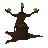

Magic tree

| Config name | macro_ent_magic |
| NPC id | 452 |
| Combat level | hidden |
| Options | Chop down |
| Category | macro_event_ent |
| Wander range | does not move |
| Movement | nomove |
| Defined in | scripts/macro events/configs/antimacro.npc |
Magic tree
The tree shimmers with a magical force.
Locations
This NPC is not placed on the map by the map files (it may be spawned by scripts, e.g. during quests, or be a variant).